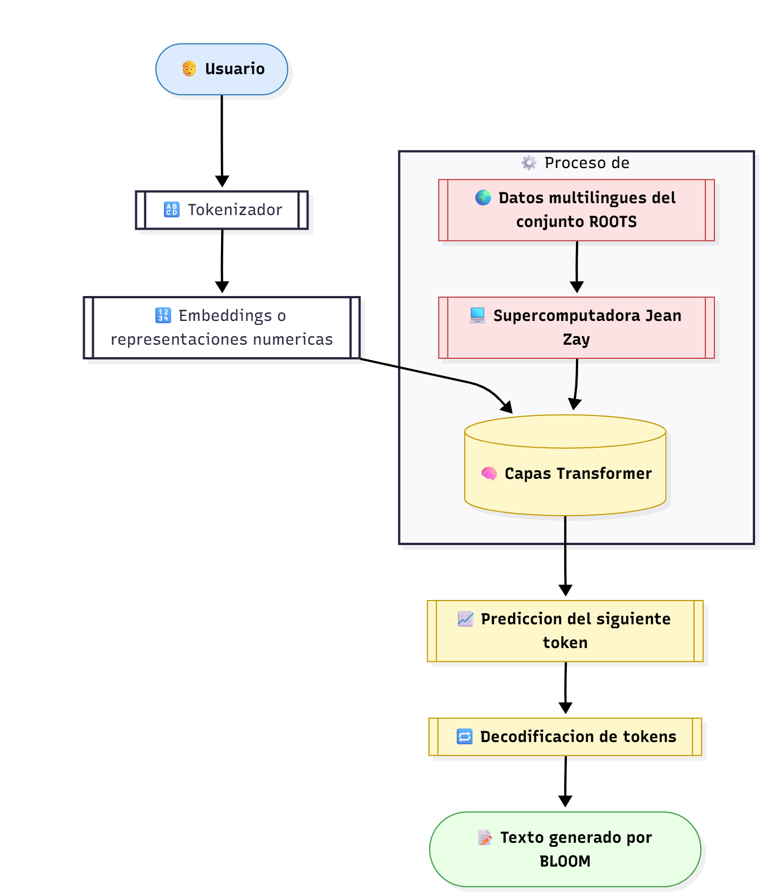
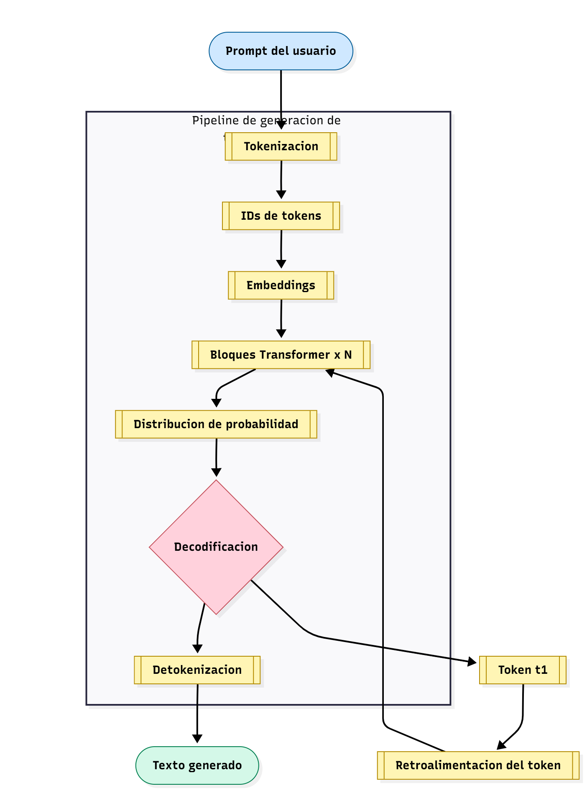

Joe Concha
Desarrollador Full StackApasionado por crear aplicaciones web escalables y explorar nuevas tecnologías.
Perfil de GitHubBLOOM (BigScience Large Open-science Open-access Multilingual Language Model) es un modelo de lenguaje autoregresivo basado en la arquitectura Transformer. Fue desarrollado por más de 1.000 investigadores del proyecto BigScience, con el objetivo de crear una IA abierta, transparente y multilingüe que sirviera como alternativa ética a modelos cerrados como GPT-3.
Arquitectura general de BLOOM
BLOOM utiliza una arquitectura Transformer autoregresiva, donde el modelo predice el siguiente token (palabra o subpalabra) basándose en los anteriores. Cada capa contiene mecanismos de autoatención y feed-forward que le permiten comprender dependencias a largo plazo en los textos.
El modelo fue entrenado con una infraestructura de 384 GPUs NVIDIA A100 en la supercomputadora Jean Zay, durante más de tres meses, procesando billones de tokens y ajustando los parámetros del modelo de manera colaborativa.
El conjunto de datos ROOTS contiene más de 1,6 TB de texto en más de 46 idiomas y 13 lenguajes de programación. Este dataset fue diseñado para representar la diversidad cultural y lingüística del mundo digital.
Incluye textos de literatura, artículos científicos, código abierto y recursos educativos, garantizando que BLOOM sea capaz de generar respuestas inclusivas, coherentes y éticas.
BLOOM convierte las palabras en tokens (fragmentos numéricos) que luego son procesados para generar texto. Su flujo general incluye:
Flujo de generación de texto en BLOOM

Apasionado por crear aplicaciones web escalables y explorar nuevas tecnologías.
Perfil de GitHub
Especializado en crear interfaces de usuario hermosas e intuitivas con frameworks modernos.
Perfil de GitHub
Experto en desarrollo del lado del servidor y diseño de arquitectura de bases de datos.
Perfil de GitHub
Enfocado en automatización, pipelines CI/CD y gestión de infraestructura en la nube.
Perfil de GitHub